|
|
|
Новогодние каникулы на Мамае
(5-8 января 2007) ... окончание, начало здесь ... День 2-й, 6 января, отсыпаемся и батоним, потому как вроде бы каникулы... Сварили на завтрак супервкусный геркулес с изюмом и сгухой. Вове и Артему сегодня надо возвращаться в цивилизацию, а у остающейся троицы (два Лёхи и Юля) по плану гора Мамай. Сегодня наверху облачно и сурово. Догоняем улан-удэнцев и топаем по гребню. Перед нами прошли лыжник и доскер, из старой гвардии, укатили в цирк по центральному кулуару. Маленький мужик Вадик Малюк первым забежал на Мамай и замерз, ожидая нас. Отдохнули на вершине, спрятавшись от холодного ветра за надувом, попили чаю с ништяками, Дядя Паша угостил салом - сало ел бы, сало пил бы, сало салом закусил бы ... :) Улан-удэнские лыжники покатили вниз по восточному гребню в Висячий цирк. И тоже мы едем следом за ними, на новый для нас склон. 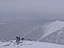 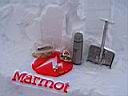 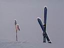 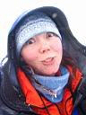 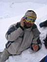 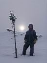 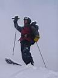 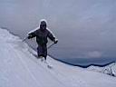 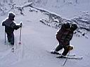 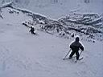 Как называется точно этот склон - врать не буду, может и не Висячий. Классификатора мамайских склонов пока нет в природе. Одно помним точно - напротив через речку Мамай был кулаур, по которому поднимаются на Лесной. Еще помним, что склон широкий, а уклон равномерный и приличный. Вот здесь-то и показала себя новая фрирайдная доска Пестова Алексея. Ласточкин хвост, необычная геометрия, доска с характером :) Ну, много говорить не буду, я на ней не кайфовал, ждем тест-драйв от Лёхи! 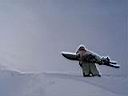 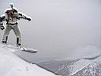 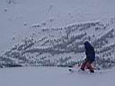 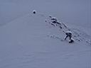 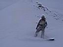 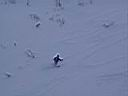 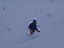 Катанули новый для себя склон на отлично, успели заснять видос, один только момент - вытрапливать от туда минут полчаса пришлось до кунга, по следам лыжникофф, которые сегодня решили еще катануть с Трех Берез. Юля решила, что ей пожалуй хватит на сегодня счастья, а мы пошли на верх, и даже вышли на гребень, что выше Берез. От туда и катанули в холодный и сумрачный центральный цирк. Йо-хо, снимаем видео, ищем взглядом дропы, прыгаем с них, падаем, выкатываем в первый кулуар и до кунга. А мазафаки пошли кататься в ночную (Нам по#уй, мы пьяные! :) А мы голодные! Доедаем геркулес, отдыхаем. Потом сходили к улан-удэнцам, показали фоты, послушали суровую правду про февральский фрирайд на Святом Носе.
День 3-й, 7 января, похоже наши ряды редеют - как ни уговаривали
Юлю остаться, она все равно решила сегодня выезжать в город, работа
для нее - это святое! А я вот анекдот недавно такой слышал: Тропит сноубордист
вверх по склону, весь потом обливается. Залез на самую высокую вершину,
а там пампера такая, что пока встегивался, все себе поотморозил. Покатил
он вниз по склону, а тут лавина! Замесило его, бьет о скалы так, что
кости трещат. Завалило короче его и только чудом товарищи-фрирайдеры
его откопали. И вот он сидит с перевязаной башкой и сломаной рукой,
улыбается и говорит: - Все равно лучше, чем работать! 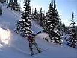 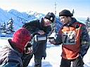 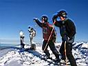 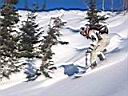 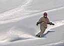 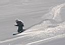 Возвращались самые последние. Лыжники спустились с Лесного
по дальнему западному кулуару, а мы решили тоже по западному, но чуть
поближе, по Веселому кулуару. Особенно было весело, когда два Лёхи потеряли
друг друга из виду, потому как ехали в разных стойках, спинами друг
к другу и разъехались по разным склонам гребня. Ну, вроде обошлось,
докричались и встретились уже внизу, у реки. Пришлось опять потропить
минут полчаса до кунга. Ноги уже реально не ходили! Хорошо еще, что
вышли на след лыжников, да и снег плотненький был.
День 4-й, 8 января, последний день каникул. Два Лёхи решили
закрепить пройденый материал - катануть разок с вершины Лесного по вчерашнему
Веселому кулуару. Погода все такая же теплая и солнечная. Быстро позавтракали,
собрались, поднялись на верх и быстро катанули, потому как про фото
и видео можно уже забыть, батарейки сдохли. Кулуар называется Веселый,
потому, что в нем много кочек, с которых очень весело прыгать и падать
башкой в снег, а это есть гуд и позитив :) Да, там можно напрыгаться
так, что ноги устают после спуска! Могул, однако... Январь 2007. Белокрылов А.Ю. Слюдянка.
PS от Xslide :
Очередная сводка новостей с Мамая порадовала:) Спасибо:) |
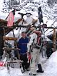 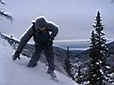 |